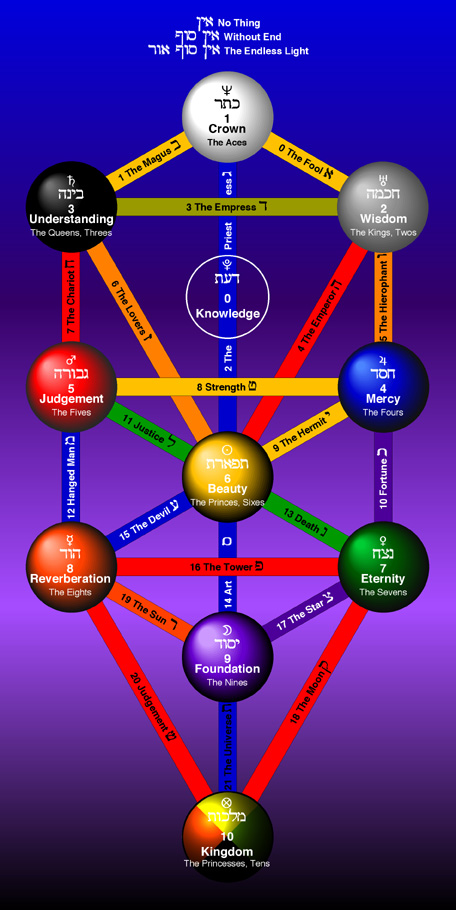

Select a path on the Tree of Life
Debug Information
If clicking on paths doesn't work, please check the browser console for errors.
You can also try using keyboard navigation (arrow keys) to select paths.
Waiting for interaction...